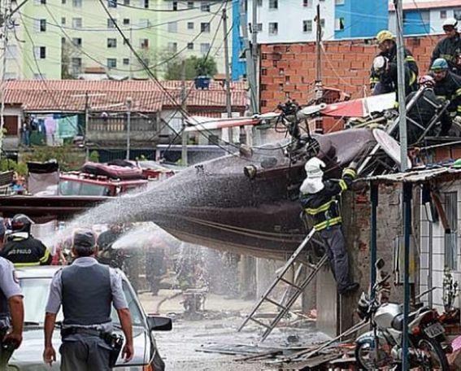
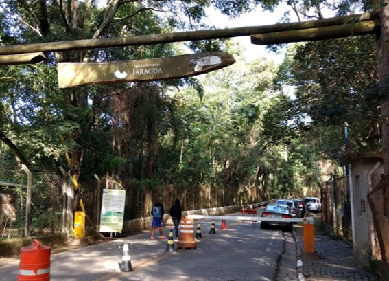
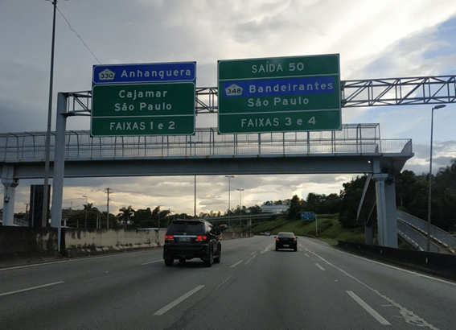

.png)
Curiosidades do Jaraguá
O Pico do Jaraguá era uma "bússola" para os bandeirantes. Imagem
tratada pelo fotógrafo Caio Reisewitz a partir de outra imagem feita
pelo fotógrafo Joaquim Reis (sem data). Dureza e resistência
O Pico do Jaraguá é um elevado de quartzo intemperizado (quartzito).
Você poderá saber mais sobre isso no artigo "Entrevista: cientista da
natureza formada pela USP revela do que é feito o Pico do Jaraguá"
publicado aqui mesmo no Jaraguá SP Post. O quartzo conta com nível de
dureza "7" na Escala de Mohs e é, portanto, mais duro que o aço, que
tem grau 4-4.5 na mesma escala.
O quartzito, por sua vez, tem mais de 75% de quartzo em sua
composição. Isso faz do Pico do Jaraguá um morro altamente resistente
contra a erosão. Por isso, ele é chamado de Morro Testemunho no meio
acadêmico.
Exposição de quartzito do Pico do Jaraguá visualizada a partir da estrada que leva ao topo do elevado
Mais antigo que a cordilheira dos Andes (formada entre 100 milhões e
30 milhões de anos) e que a cordilheira do Himalaia (originada entre
70 milhões e 30 milhões de anos), o Pico do Jaraguá foi modelado na
paisagem há cerca de algo entre 700 milhões e 500 milhões de anos,
durante a formação do supercontinente Gondwana.
O Monte Everest (8.848m) e toda a cordilheira do Himalaia são cerca de
500 milhões de anos mais novos que o Pico do Jaraguá.
O elevado tem a maior média mundial de raios invertidos. Em grandes
tempestades, coriscos imperceptíveis a olho nu (só filmados por meio
de uma câmera especial que custa R$ 200 mil) partem de suas antenas
para as nuvens. Leia os artigos "Pico do Jaraguá tem a maior média
mundial de raios invertidos" e "No Jaraguá, Inpe registra raios
invertidos simultâneos pela 1ª vez na história do Brasil"
Confinamento
O Pico do Jaraguá está localizado dentro do PEJ que, por sua vez, está confinado pela rodovia Anhanguera (à esquerda da foto a seguir), pela rodovia dos Bandeirantes (à direita), pelo Rodoanel (acima) e por áreas residenciais (abaixo), um fato preocupante do ponto de vista ambiental. O confinamento deste lugar é um dos assuntos tratados no artigo "Diversidade da fauna do Parque Estadual do Jaraguá: importância deste remanescente frente aos impactos da urbanização" escrito pela bióloga Natasha Ceretti.
Criadouro de animais
O turista que é bom observador, quando vai ao mirante do Pico do
Jaraguá (próximo à antena da TV Cultura), consegue perceber que há na
encosta do morro algumas construções abandonadas. O que seriam aquelas
ruínas? De acordo com funcionários e voluntários do PEJ, tais
construções eram propriedade de um homem que criava gado no lugar.
Elas foram utilizadas até meados da década de 1990, quando o dono
faleceu.
Há, ainda, outras coisas abandonadas ao redor do morro, como você
poderá descobrir ao ler a matéria "Conpresp quer tombar ruínas de
antiga pedreira de quartzo localizada no Jaraguá". Ruínas de uma
construção nas imediações do Pico do Jaraguá utilizada na década de
1990 para criação de animais;
O ícone perdido
Desde o final da década de 1920, moradores e políticos tentam
construir no cume do elevado um monumento símbolo para a cidade de São
Paulo, tal qual o Cristo Redentor o é para o Rio de Janeiro. Conheça
essa história no artigo "Lei abriu crédito para a construção de
estátua de 75 metros ao apóstolo Paulo no Pico do Jaraguá, mas a Globo
impediu o projeto".
Ainda hoje há quem sonhe em construir um monumento iconográfico para a
cidade de São Paulo no alto do Pico do Jaraguá.
Águas que murmuram
O Ribeirão das Lavras, que nasce dentro do Pico do Jaraguá, foi o riacho onde os europeus encontraram ouro e pedras verdes pela primeira vez no Planalto Paulista. Hoje, esse pequeno rio encontra-se quase totalmente poluído, assunto sobre o qual você poderá saber mais ao ler a matéria "Documentário mostra a importância do Ribeirão das Lavras e expõe seu atual estado de calamidade".
|  |  |  |